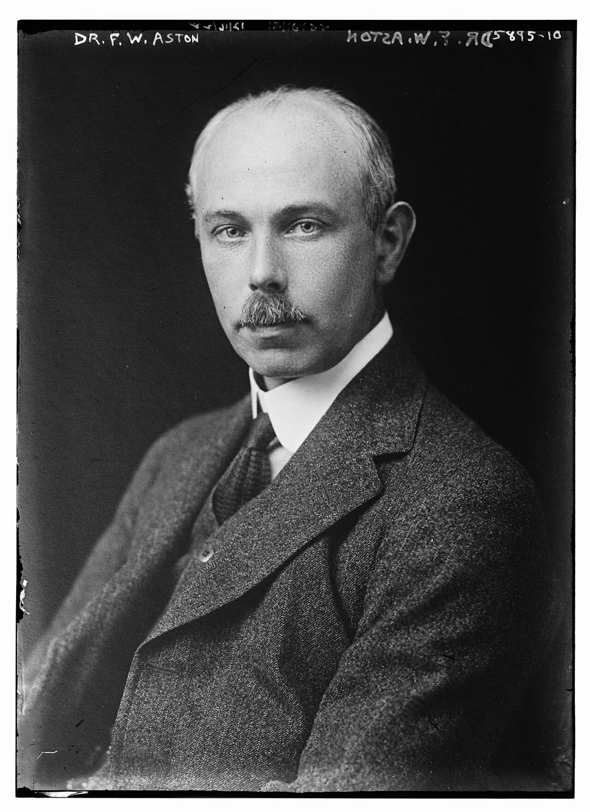
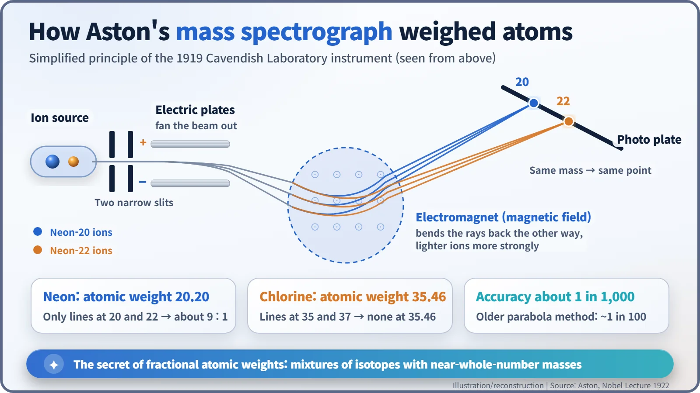
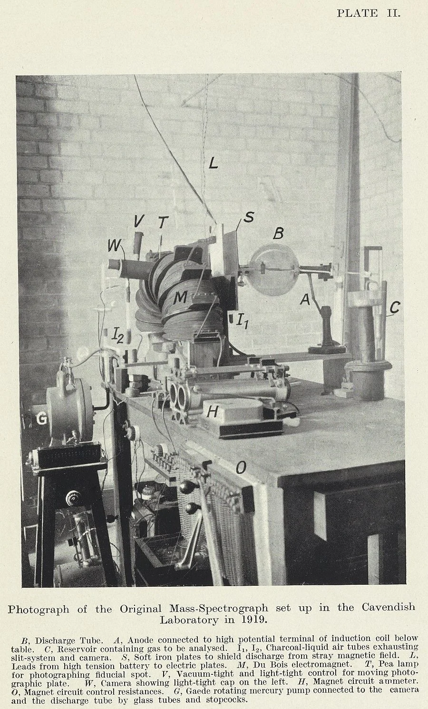
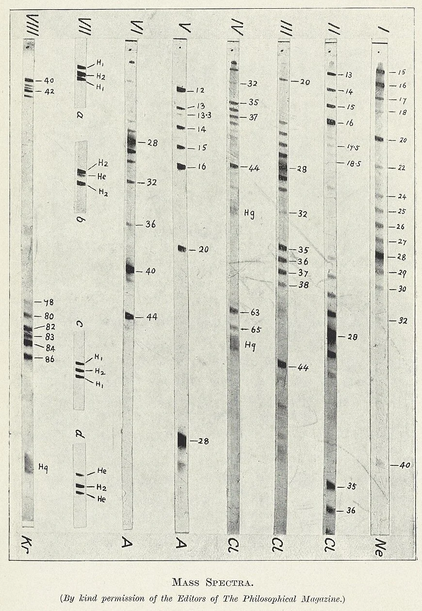
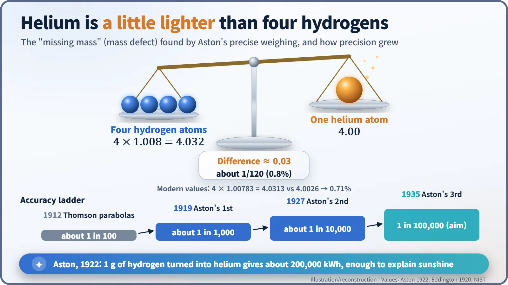

Nuclear History · 032
The Man Who Put Atoms on a Scale — Aston's Mass Spectrograph and the Mass Defect (1919–1922)
A precise scale for single atoms split neon and chlorine into isotopes and found helium about 0.8% lighter than four hydrogens.
In 1919, at the Cavendish Laboratory in Cambridge, Francis Aston built the mass spectrograph, a precise scale for individual atoms. It showed that elements with fractional atomic weights are mixtures of isotopes with near-whole-number masses, and that helium is about 0.8% lighter than four hydrogen atoms. That small missing mass, the mass defect, pointed to the energy that powers the stars.
A warning from a man who built a scale
"Should the research worker of the future discover some means of releasing this energy in a form which could be employed, the human race will have at its command powers beyond the dreams of scientific fiction; but the remote possibility must always be considered that the energy once liberated will be completely uncontrollable and by its intense violence detonate all neighbouring substances."
Stockholm, 12 December 1922. These are the closing lines of a Nobel lecture in chemistry. The speaker had built neither a reactor nor a bomb. Francis William Aston (1877–1945) of the Cavendish Laboratory in Cambridge had built a set of scales for atoms. How did a weighing machine lead to a warning like that? [1]

Two lines where there should have been one
The story starts in 1912. Aston was working as assistant to J. J. Thomson (1856–1940), the discoverer of the electron. Their method was to send a beam of electrically charged atoms (ions) through electric and magnetic fields, which bent the beam into curved streaks, parabolas, on a photographic plate. Each element gave one parabola. Neon gave two. The brighter one matched a mass of about 20, the fainter one about 22, while chemists put neon's atomic weight at 20.20. [1]
The same element, but atoms of different weights? Aston tried to pull the two apart. Thousands of rounds of fractional distillation over charcoal chilled with liquid air produced nothing. Months of forcing the gas through clay pipes gave a small but real signal: a density difference of about 0.7% between the heaviest and lightest fractions. Then the First World War broke out. Aston spent it at the Royal Aircraft Establishment in Farnborough, studying how weather affected aeroplane fabrics and their varnish-like coatings ("dopes"). Meanwhile, in radioactive elements, the idea of isotopes, atoms of the same element with the same chemistry but different masses, became widely accepted. [3]
1919: a spectroscope for atoms
Back at the Cavendish after the war, Aston's problem was precision. Thomson's parabola method was reliable only to about one per cent. So Aston designed something new. Two very narrow slits turned the ion beam into a thin ribbon; an electric field spread it out like a fan; then a magnetic field bent it back the other way. The clever part was the geometry: ions of the same mass came together at one spot on the photographic plate even if they were moving at different speeds. Because it sorted atoms by mass the way a spectroscope sorts light by colour, he called it a mass spectrograph. [1] [4]


The results were clean. Neon showed lines at 20 and 22, measured to about one part in a thousand, and a 10% share of neon-22 brought the average to exactly 20.20. Chlorine, with an atomic weight of 35.46, was even more striking: the plate showed lines at 35 and 37 and nothing at all at 35.46. Just as a class with an average height of 165.5 cm need not contain anyone of that height, a fractional atomic weight turned out to be an average over isotopes whose own masses are close to whole numbers. Aston summed this up as the whole-number rule. To be fair to history, Arthur J. Dempster in Chicago had published a mass-analysis instrument of his own in 1918, so the field had two founders. [1] [2]

The one element that did not round off
There was one exception: hydrogen. On a scale where oxygen counts as exactly 16, hydrogen came out not at 1 but at 1.008. By setting lines of hydrogen molecules and helium side by side on the same plate, Aston showed beyond doubt that a helium atom weighs less than four hydrogen atoms. Four times 1.008 is 4.032, yet helium was 4. Roughly one part in 120, about 0.8%, was missing. [1] [5]
Aston thought the mass shrank when particles were "packed" tightly together inside the nucleus. (In his day, the helium nucleus was pictured as four protons and two electrons; the neutron was not discovered until 1932.) Using Einstein's equivalence of mass and energy, he worked out that turning hydrogen into helium must release that missing mass as energy. Today we call the effect the mass defect, and Aston was the first to pin it down by direct, precise measurement. With modern values, the gap is 0.71%. [6]

His lecture put a number on it. The hydrogen in 9 cc of water, about one gram, would release some 200,000 kilowatt-hours if it all became helium: "a source of energy sufficient to account for the heat of the sun." In August 1920 the astronomer Arthur Eddington had already used Aston's measurement to suggest that stars might shine by turning hydrogen into helium. [1] [5]
A sharper scale, and a long legacy
In 1922 Aston won the Nobel Prize in Chemistry "for his discovery, by means of his mass spectrograph, of isotopes, in a large number of non-radioactive elements, and for his enunciation of the whole-number rule." He kept sharpening his scales. In 1927 a second instrument, accurate to about one part in 10,000, let him plot how far each atom strays from a whole number, his "packing fraction" curve. Over his career he identified 212 naturally occurring isotopes. [2] [3]
Those tiny deviations became the raw data for working out how much energy nuclear reactions, and later fission, could release. The principle of sorting ions by mass also grew into the calutrons that enriched uranium during the Manhattan Project. The news that helium is just a little too light did not come from a grand theory. It came from a scale built by someone who refused to stop doubting the third decimal place.